| |
|
APLİKASYON RAPORLARI
|
Özel aplikasyon raporları şunlardır: Eksen Aplikasyonu
İşgal Alanı Yarma Şev Başı ve Dolgu Şev Eteği Kayada Önkesme Kamulaştırma Alanı Yarma ve Dolgu Şev Yükseklikleri Genişletmeler ve Yükseltmeler Şev Aplikasyonu Duvar Aplikasyonu Otokorkuluklar Profil Sembolleri Duvar Temel Aplikasyonu IREDES Tüneli Üstyapı Katmanları Aplikasyonu Üstyapı Katman Kotları İnce Tesviye Kotları Fazla Kazı Seçme Malzeme: Kenarlar Seçme Malzeme Kullanım Mesafesi 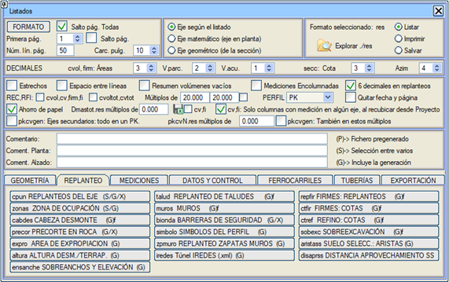
Eksen Aplikasyonu EKSEN APLİKASYONU (cpun.res) raporu, aplikasyon menüsünde yapılmış olan nokta hesaplama raporlarından birini seçmeye veya ekseni (ya da tüm eksenleri belirterek), başlangıç KM, bitiş KM ve some aralığı ya da katlarını vererek yeni bir rapor oluşturmaya olanak tanır. Some aralığı seçeneğinde KOT sütunu üçe ayrılacaktır: SOL / SAĞ KIRMIZI KOT Z ve KULLANICI Z. Geçerli bir CRS varsa, coğrafi enlem ve boylam koordinatları listelenir ve başlığa CRS adı eklenir. cpun0.res raporu, aktif OLMAYANLAR hariç projenin tüm eksenlerinin setini içerir. Eğer rapor tüm aktif eksenler için oluşturulursa, gruplara göre sıralanması da seçilebilir, böylece her grup için bir rapor oluşturulur (cpunG1.res, cpunG2.res, ...). 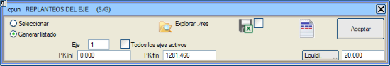
Demiryolları durumunda, bu rapor proje kotu yerine alçak ray kotunu sunar. Tek hatlı demiryolları için deverler, sağa kurplarda deverin pozitif olarak ve DEVER_S sütununda (kalkan raydır) listeleneceği şekilde gösterilir. Sola kurplarda, dever pozitif olarak ve DEVER_D sütununda (kalkan raydır) listelenir. Rapor başlıklarındaki metinleri düzenleme ve dosyalara kaydetme, ayrıca bu raporun oluşturduğu sütunları etkinleştirme/devre dışı bırakma imkanı.  . . Bu raporda diyalog kutusu genişletildiğinde, Gerçek Kesit penceresi ilgili üstyapı katmanları kesitini gösterir. Raporlar->PROFİL:Kullanıcı KM seçeneği, ayrıca bir eksenin X,Y koordinatlarında veya AZ,mesafe (Aplikasyon bazlarından) cinsinden aplikasyon raporlarını da etkiler: cpun.res, cpun.xlsx ve bisection.res Not: Genel rapor yapılandırmasında,  aplikasyonlarda 6 ondalık seçeneği aktifse,
eksene olan mesafeler otomatik olarak 4 ondalıkla görünür. Geçerli bir CRS varsa, .xlsx dosyasında WGS84'e göre oluşturulan koordinatlı sütunlar, ondalık formatta altmışlık derece cinsinden ifade edilecektir. aplikasyonlarda 6 ondalık seçeneği aktifse,
eksene olan mesafeler otomatik olarak 4 ondalıkla görünür. Geçerli bir CRS varsa, .xlsx dosyasında WGS84'e göre oluşturulan koordinatlı sütunlar, ondalık formatta altmışlık derece cinsinden ifade edilecektir.İşgal Alanı İŞGAL ALANLARI (zonas.res) raporu, zona#.res dosyalarını oluşturur (# eksen numarasıdır). Bu dosyalar, ulaşılan bölgelerin sınırlarının (işgal sınırları) X ve Y koordinatlarını, ayrıca bu sınırların kotunu ve şevlerin yüksekliğini içerir. Aktif gruplardaki tüm eksenlerin ortak bir raporu oluşturulabilir. Ek olarak, APLİKASYON menüsünden yüklenebilen IS#zonas#.rep aplikasyon dosyası (# eksen numarasıdır) otomatik olarak oluşturulur. 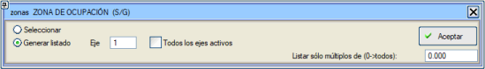
Raporu oluştur kutucuğunu etkinleştirerek, raporu yalnızca belirli bir değerin katlarında oluşturma imkanınız vardır. Yarma Şev Başı ve Dolgu Şev Eteği YARMA ŞEV BAŞI (cabdes.res) raporu, belirli bir yüzeyin son ve sondan bir önceki noktasına dayanarak, sağdan ve soldan, bu noktaları birleştiren eğimi belirtir. Eğer varsayılan olarak sunulan yüzeyler verilirse, sonuç yarma şev başı ve dolgu şev eteği olur. Bu rapor, proje arazi profilleri tam olmadığında uygun noktayı vurgulayarak ve arazinin teorik kotundaki küçük hataların mesafesini "anında" düzelterek bu hatları sahada aplike etmek için kullanılır. 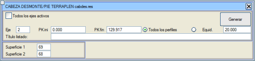
Bu raporda ayrıca eksene göre yükseklikler Zdt – Zras olarak görünür; burada Zdt yarma şev başının veya dolgu şev eteğinin son noktasının kotu ve Zras ise dönme ekseninin (KIRMIZI KOT menüsünde tanımlanan) kotudur. Ayrıca, tmp klasöründe cabdes#.res (# eksen numarasıdır) adında, eksen numarasını içeren bir sütun eklenmiş sekmeli bir rapor oluşturulur. Kayada Önkesme KAYADA ÖNKESME (precor.res) raporu, her bir taraf için iki koda dayanarak, farklı kaya yarmalarındaki önkesme uzunluklarını, yüksekliklerini ve atım sayısını hesaplar. Bu rapor hem .res hem de .xlsx formatında alınabilir. 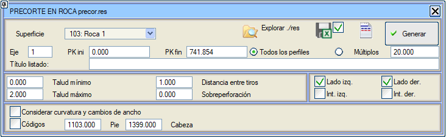
Bu raporun özellikleri şunlardır:
Aşağıdaki kalemler listelenir:
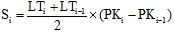
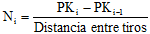
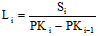
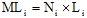
Kamulaştırma Alanı KAMULAŞTIRMA ALANI (expro.res) raporu, her profil için her bir kenarın (sağ ve sol) koordinatlarını (X,Y,Z) ve eksene olan mesafesini, ayrıca işgal edilen genişliği, kısmi alanı ve toplam alanı içerir. 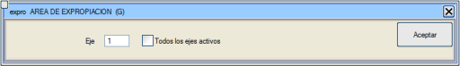 Tüm aktif eksenler kutucuğu etkinleştirildiğinde, tüm eksenlerin ortak bir raporunu elde ederiz. Bu raporun son kısmında eksenlere göre bir özet ve toplam toplam yer alır. Yarma ve Dolgu Şev Yükseklikleri Belirli aralıklarda yer alan yarma ve dolgu şevlerinin yüksekliklerini içerir. altura.res raporunu elde ederiz. Platform kenarı ile şev başı/eteği arasındaki kot farkı ölçülür. Genişletmeler ve Yükseltmeler Genişletme ve İyileştirme projeleri için, yeni platformun 11 nolu kodu ile mevcut platformun kenarı arasındaki mesafe (içeride kalması durumunda negatif değer) ve mevcut platformun kenarındaki (veya içeride kalıyorsa yeni platformun 11 nolu kodundaki) kot farkı listelenir. 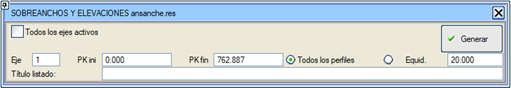
Şev Aplikasyonu ŞEV APLİKASYONU (talud.res) raporu, KM'lere göre uygun olmayan malzeme yarma hatlarının ve/veya platformun (yüzey 68) son noktadan bir koda (varsayılan olarak 100) kadar olan köşe noktalarının eksene olan mesafelerini ve kotlarını çıkarmaya olanak tanır. 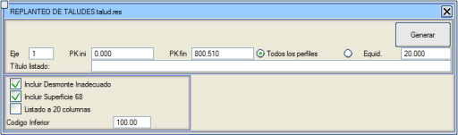
Bu raporu 20 sütunlu rapor olarak almak, ilgili kutucuğu etkinleştirerek mümkündür. Şev ve malzeme: her
nokta için şev ve malzeme eklenebilir, bunlar arasında ayrım yapılır: Dolgu, Uygun Olmayan, Toprak, Kaya 1, Kaya 2, Kaya 3, Kaya 4, Kaya 5, Kaya 6.Duvar Aplikasyonu DUVARLAR (muros.res) raporu, istenirse sadece aktif eksenler için oluşturulabilir ve duvar başlarının eksene mesafesini, kotunu, X ve Y koordinatlarını, tipini (yarma/dolgu), yüksekliğini, uzunluğunu ve görünür yüzey alanını, ayrıca temel alt kotunu ve kırmızı kotu içerir. Bu rapor ayrıca, her bir duvarın görünür yüzey alanının birikimli olarak toplandığı bir sütun da sunar. Açık orta refüj durumunda, açık orta refüj tarafındaki bir dolgu duvarının metrajı da gösterilir. Raporda bu duvar "M" anahtarıyla görünür.  Tüm aktif eksenler kutucuğu etkinleştirildiğinde, kavşak ve dönel kavşak kollarının eksenlerinin duvarları da oluşturulur. Yükseklik aralığını sabitle kutucuğu etkinleştirilerek, yüksekliği iki değer arasında olan duvarları listeleme imkanımız vardır. Raporun sonunda, YARMA SOL, YARMA SAĞ, DOLGU SOL, DOLGU SAĞ, ORTA REFÜJ SOL ve ORTA REFÜJ SAĞ olarak ayrılmış toplam duvar uzunluğu ve yüzey alanını içeren bir sayfa ve tüm bunların toplamı yer alır. Eğer duvarlar duvar tablosuna göre hesaplanıyorsa, raporun sonunda her bir duvarın uygulandığı kesimlerin bir özeti (tabloda göründüğü adıyla), güzergahta ortaya çıkış sırasına göre düzenlenmiş olarak sunulur. Enterpole et kutucuğu etkinleştirildiğinde: duvar yüzey alanının ölçümü için, duvarın göründüğü son profilde aniden bitmediği, bir sonraki profilde tamamen kaybolana kadar yavaş yavaş yok olduğu varsayılır. Bu rapor, eğer tablo duvarları ise, .tmu tablosundaki duvarın adını size sunar. Otokorkuluklar OTOKORKULUKLAR (biondas.res) raporu, ISPOL#.per dosyasından otokorkulukların konumunu çıkarır ve koordinatlarını ve uzunluğunu listeler, sonuna toplam uzunluklar eklenir.  Raporu oluştururken, programa ayrıca biondaN.mcv adıyla bir yol çizgi işaretleri dosyası oluşturmasını ve verilerin beş olası sekmeden hangisinde saklanacağını belirtmek mümkündür. Ayrıca tüm otokorkulukları veya sadece motosikletçi koruma sistemine (M.K.S.) sahip olanları listeleme imkanı da sunulur. Profil Sembolleri Her profilde bulunan sembol tiplerinin bir raporunu alırız; KM, sembol tipi, X ve Y koordinatları ve kotunu elde ederiz. ISPOLx.per'den farklı bir profil dosyası seçmek mümkündür. Seçilen dosyanın her KM için, profilin ait olduğu eksenin doğru koordinatlarını ve azimutunu içerdiği varsayılır. 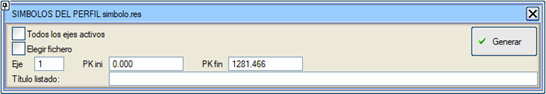
Duvar Temel Aplikasyonu Duvar temelinin taban kotunu ve alt kotunu aldığımız bir rapor elde ederiz. Ayrıca bize eksene olan mesafeyi ve X, Y koordinatlarını da verecektir. 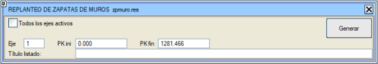
IREDES Tüneli Bu rapor, daha önce tüneli tanımlayan profillerde oluşturulmuş olması gereken 313 sembolünün koordinatlarının listelendiği Xml IREDES formatında bir dosya oluşturur. 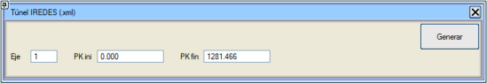
Üstyapı Katmanları Aplikasyonu ÜSTYAPI KATMANLARI APLİKASYONU (repfir.res) raporu, belirtilen eksenin veya tüm aktif eksenlerin istenen üstyapı bileşenlerinden her birinin sahada nivelmanı için tasarlanmıştır. [Oluştur] düğmesine basıldığında elde edilen format, nivelman defteri olarak hazırlanmıştır. 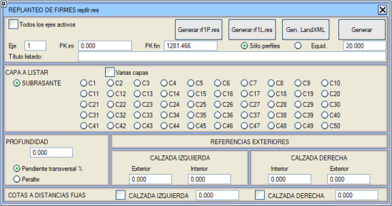
Çoklu katmanlar seçeneği etkinleştirilirse, diyalog kutusu birden fazla üstyapı katmanının aplikasyonunu aynı anda listelemeyi mümkün kılacak şekilde değişir. Raporlarda noktalar arasındaki enine eğim gösterilir. Ayrıca, aplikasyon için üstyapı katmanının banket kenarına olan mesafeleriyle verilen dış referans noktaları eklenebilir. Platformun her iki tarafından, eksene sabit bir mesafeyle verilen bir nokta çıkarılabilir. Bu nokta raporda f anahtarıyla yazdırılacaktır. Ayrıca enine eğim yerine deveri listeleme imkanı da vardır, bu durumda seçilen dever konvansiyonu (klasik veya uluslararası) kullanılır. Bu menüden ayrıca her bir üstyapı katmanı için LandXML dosyaları da oluşturulabilir. Ayrıca, [rf1L.res Oluştur] düğmesi, raporu aşağıda gösterilene benzer bir formatta oluşturmayı sağlar: 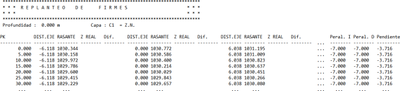
rf1P.res raporu aracılığıyla, her KM'de üstyapı katmanının noktalarını eksene olan mesafesi ve o noktadaki gerçek kalınlığı ile listeler. Üstyapı Katman Kotları ÜSTYAPI KATMAN KOTLARI (ctfir.res) raporu, ardışık üstyapı şeritlerini sermek için kullanılır. Her zaman aşınma yüzeyindeki noktalara referansla verilen 4 noktanın (A, B, C ve D) verileri listelenir. 1 ve 2 kodları ana platformu, 2 ve 11 birinci yan platformu vb. sınırlar. B ve C, aşınma yüzeyindeki iki noktadan yatay mesafe ve derinlikle tanımlanan bir üstyapı şeridinin üst yüzeyinin uçlarıdır ve A ve D, öncekilerin dışındaki diğer yardımcı noktalardır (finişer kılavuz teli için kazıklar veya çiviler). 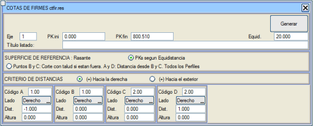
Noktalar B ve C: Dışarıdaysa şevle kesişim. A ve D: B ve C'den mesafeler. Tüm Profiller seçeneği etkinleştirilirse, program, verileri tanımlanan some aralığına göre analitik olarak hesaplamak yerine, ISPOL#.per dosyasındaki belirtilen KM aralığındaki tüm profilleri analiz eder ve eğer B veya C noktası 2 veya daha yüksek bir kodla (platformun dış kenarı veya dış banketler) artı bir mesafeyle aranıyorsa ve nokta üstyapı katman paketinin dışında kalıyorsa, program üstyapıyı kapatan dış şevle (yüzey 67, noktalar 11, 50 ve 100) kesişimi arar. Ayrıca, B veya C noktasının 1 veya daha düşük bir kodla (platformun iç kenarı veya iç banketler) artı bir mesafeyle aranması ve noktanın orta refüj tarafından üstyapı katman paketinin dışında kalması durumunda, program bu kez üstyapıyı kapatan iç şevle (yüzey 67, noktalar -11, -50 ve -100) kesişimi arar. Bu seçenek etkinleştirildiğinde, A noktası B noktasına göre bir mesafeyle ve D noktası C noktasına göre bir mesafeyle hesaplanır. İnce Tesviye Kotları İNCE TESVİYE KOTLARI (ctref.res) raporu, tesviye yüzeyi platformunun ince tesviyesi veya son rötuşları için, kırmızı kota (L67), terasmana (L68), taban zemini üstüne (L45) veya seçme malzemenin yüzeylerinden birine referansla, koduyla tanımlanmış 6 veya 12'ye kadar noktayı paralel olarak listeler. 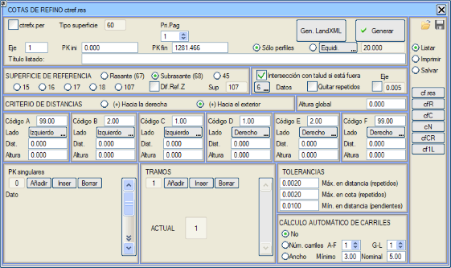
Terasman üzerinde 100 anahtar kelimesiyle nokta istendiğinde, program bulamazsa (daraltılmış hendekli yarma), otomatik olarak 99'u (hendek tabanının altındaki terasmanın en alçak noktası) arar. Eğer 99 kodu istenirse ve bulunamazsa, o zaman 100'ü arar. Eğer -55.5 istenirse ve bulunamazsa, o zaman şunları arar: a) -11, eğer orada bir eğim kırıklığı varsa.
b) Önceki (-100), eğer uzantısındaysa. Her durumda, gerçekten listelenen noktanın kodu yazdırılır. Bu rapor oluşturulurken aynı anda cf#.res (# eksen numarasıdır) adında, ÜSTYAPI KATMANLARI APLİKASYONU VE KONTROLÜ için aynı verileri içeren başka bir rapor da oluşturulur. Bu raporun başında tek bir başlık bulunur ve daha sonra sayfa sonu olmaz, bu da hesap tablolarından yüklenmesine olanak tanır. Ayrıca aşağıdaki raporlar da oluşturulur:
Genel bir Yükseklik değeri girildiğinde, bu değer 6/12 noktanın tümüne kopyalanır. Nokta dışarıdaysa şevle kesişim seçeneği aşağıdaki davranışa neden olur:
-100'den küçük bir kod istendiğinde (örneğin -500), program terasmanın orta refüj şevini kesen noktasını arar ve kesmezse, orta refüj tepe noktasının altındaki noktayı arar. Tekrarları kaldır seçeneği, iki noktanın aynı eksen mesafesi ve kotu ile çıkması durumunda birinin silinmesine neden olur. 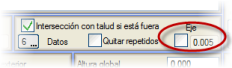Öncekine yakın bir kutucuk, eksene doğru negatif bir mesafeyle tanımlanmış noktaları eksende durdurmaya olanak tanır. Ayrıca noktanın eksenden hangi mesafede duracağı da tanımlanabilir. [Kaydet] ve [Yükle] düğmeleri, raporu tanımlayan verileri .crf uzantılı dosyalar aracılığıyla arşivlemeye veya geri yüklemeye olanak tanır. Toleranslar Üç tolerans tanımlanabilir: İki noktanın tekrarlandığını kabul etmek için maksimum mesafe ve kot toleransı ve enine eğimin hesaplanması için iki ardışık noktayı aramak için minimum mesafe toleransı. Otomatik şerit hesaplaması Bu rapordan, greyder için otomatik bir şerit hesaplaması yapmak mümkündür. İki hesaplama şekli vardır:
Verilerin içeriden dışarıya doğru tanımlanması önerilir, örneğin 12 veri durumu için:
Şeritler, ilgili ctref#.per dosyasıyla PROFİL EDİTÖRÜ'nün L Çizgileri seçeneği kullanılarak grafik olarak temsil edilebilir. Kotlar için farklı referans yüzeyi Kot referansı olarak mesafe referansından (kod+mesafe) farklı bir yüzey kullanma imkanı da vardır. Bu kutucuk etkinleştirilirse, kot referansı için yüzeyin tipini yazmak gerekir (varsayılan olarak 107). İnterpolasyonla verilen noktalar Noktaları diğer iki nokta arasında mesafelerini interpole ederek belirtme imkanı vardır. Bunun için, Taraf alanında İnterpole et seçeneği işaretli bırakılır ve mesafe kutucuğuna yüzde olarak bir değer girilir. Bir veri noktası, koduyla tanımlanmış iki nokta arasında yanal interpolasyonla tanımlandığında, arada kod 0 ile tanımlanmış ve göz ardı edilen noktalar ortaya çıkabilir. Örneğin: NOKTA A NOKTA B NOKTA C NOKTA D NOKTA E ------- ------- ------- ------- ------- Kod 2 Kod 1 Kod 0 Sol Taraf. İnterpol. İnterpol. Sol Taraf. Sağ Taraf. Mes. 0.0 %Mes. 50. %Mes. 75. Mes. 0.0 Mes. 0.0 Yük. -.1 Yük. -.1 Yük. -.1 B noktası için eksene olan mesafe ve kot, A ve D'nin yarısındadır (%50). C noktası, A ve D arasında mesafe ve kot olarak %75'tedir. Referans olarak kullanılacak sabit noktalardan (interpole edilmemiş) herhangi biri (örnekte A ve D) hesaplanamazsa, interpole edilen noktalar da hesaplanmaz. Kesimler Giriş verileri kesimlere ayrılabilir. Her kesimde, eksen numarası ve ilk sayfa numarası hariç menüdeki tüm veriler değiştirilebilir. Her kesimde farklı bir yüzey tipi kullanılması durumunda, bu durum ctref#.per profil dosyasının oluşturulmasında da dikkate alınır. Her kesimin bitiş KM'si, some aralığına uymasa bile yazdırılır. Özel KM'ler ait oldukları kesim içinde listelenir ve herhangi bir kesim içinde değillerse listelenmezler. Kesimlerde KM çakışmaları olabilir, tekrarlanabilir veya sırasız olabilirler. Raporlama, kesimlerin sırasına göre (KM sırasına göre değil) ve her kesim içinde KM sırasına göre yapılır. KM çakışmaları durumunda, ctref#.per dosyasında ve çakışan kesimlerde her kesimde oluşturulan farklı yüzeyler görünecektir. Bunun için, her kesim için ctref#.per dosyasının öncekiyle "tam bir birleşimi" gerçekleştirilir. ctref, cfR, cfC ve cfCR raporlarında, kesim değiştiğinde, sayfa başlığındaki veriler farklı olacağından sayfa sonu yapılır. Some aralığı seçeneği katlara dönüştürülebilir, örneğin:
Bşl.KM=1. Bitiş.KM= 13.5 Some Aralığı=2. Yazdırılan: 1, 3, 5, 7, 9, 11, 13, 13.5
Bşl.KM=1. Bitiş.KM= 13.5 Katları=2. Yazdırılan: 1, 2, 4, 6, 8, 10, 12, 13.5 Fazla Kazı FAZLA KAZI (sobexc.res) raporu, fazla kazının veya iyileştirilmiş tesviye yüzeyinin sahada nivelmanı için kullanılır. 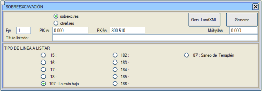
ctref.res, cf.res, cfR.res ve cfC.res formatında dosyalar oluşturabilir ve ayrıca dolgu altı zayıf zemin kazısı yüzeyini (87) listelemeye de olanak tanır. Raporu LandXML formatında oluşturmak da mümkündür. Seçme Malzeme: Kenarlar Seçme malzeme katmanlarından birini, tarafı ve kenarı seçmeye olanak tanır, seçilebilecekler:
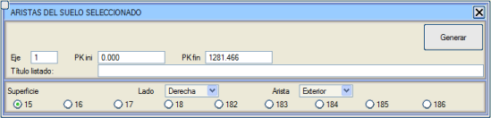
Seçme Malzeme Kullanım Mesafesi Genişletme ve İyileştirme projelerinde, bu rapor fazla kazı yüzeyinde (L107), zayıf zemin kazısı yüzeyinin (L101) sağ ve sol kenarları üzerindeki banket kenarlarını arar ve KM, eksene mesafe, mutlak kot, kırmızı kot ve terasmana (L68) göre kırmızı kotu yazdırır. 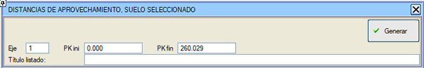 |